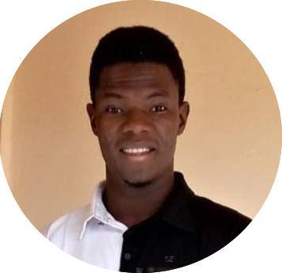
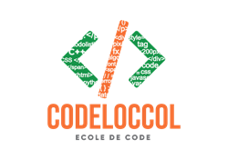
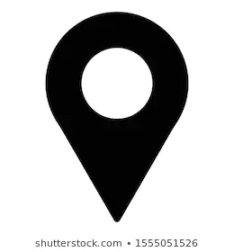

Esaie Oumara
 Etudiant à Codeloccol en Premiere Année
E-mail: esaieoumara1999@gmail.com
+227 97 00 35 49
@EsaieOumara
Niamey-Niger
Mon but
Né le 29/03/1999; je suis un jeune qui aimerais voir son pays évoluer et avec la programmation; je voudrais contribué pour que mon pays ait une evolution comme les pays très develloper avec la creation des produits essentiels en matières d'informatique Je m'appel Esaie Oumara; je suis chrétiens de nationnalité Nigérienne Grace à Codeloccol (la prémière école dedié au code du Niger ; J'ai appris à créé un site web; une application et d'autres trucs à la programmation
Formation
Compétences
Mes centres d'interêt
 E-mail: esaieoumara1999@gmail.com
E-mail: esaieoumara1999@gmail.com